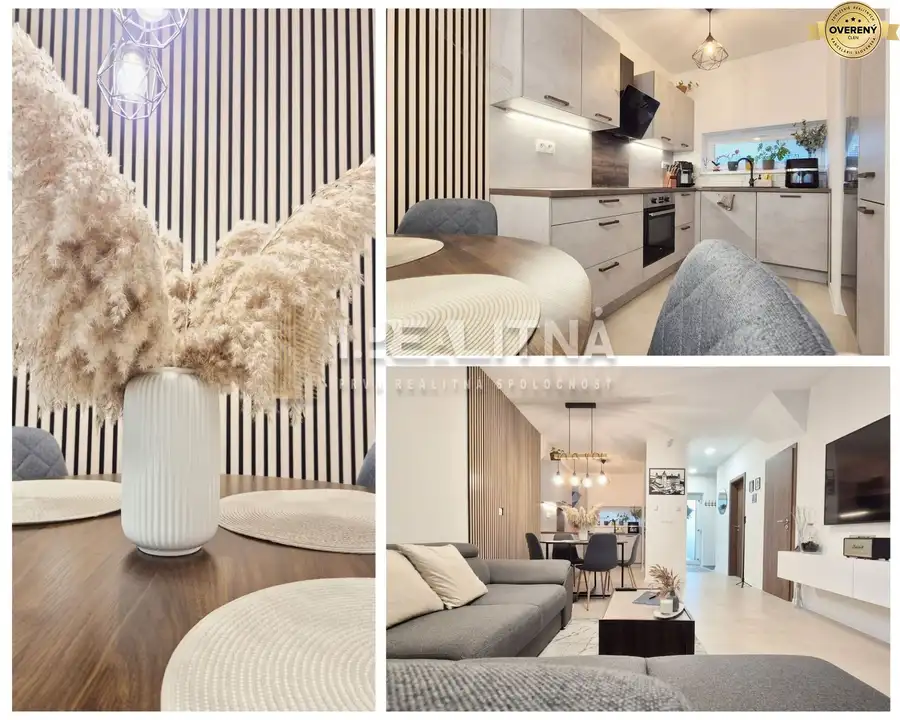
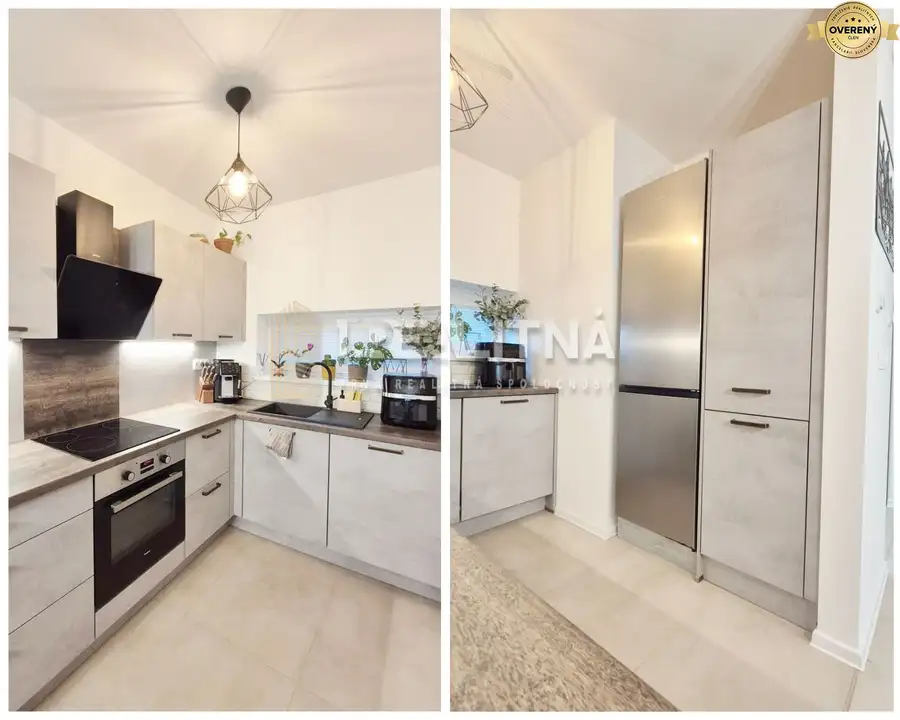
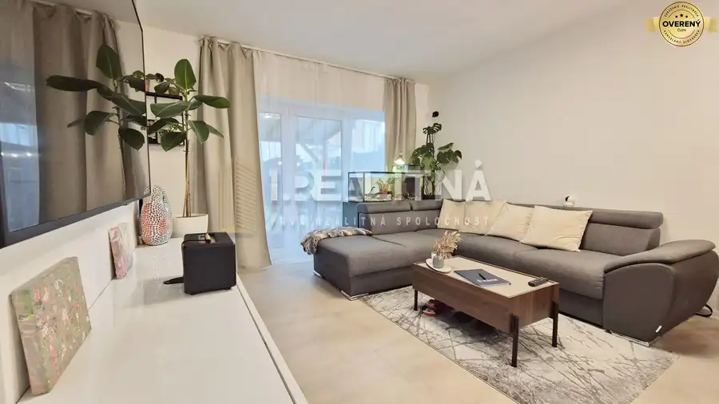
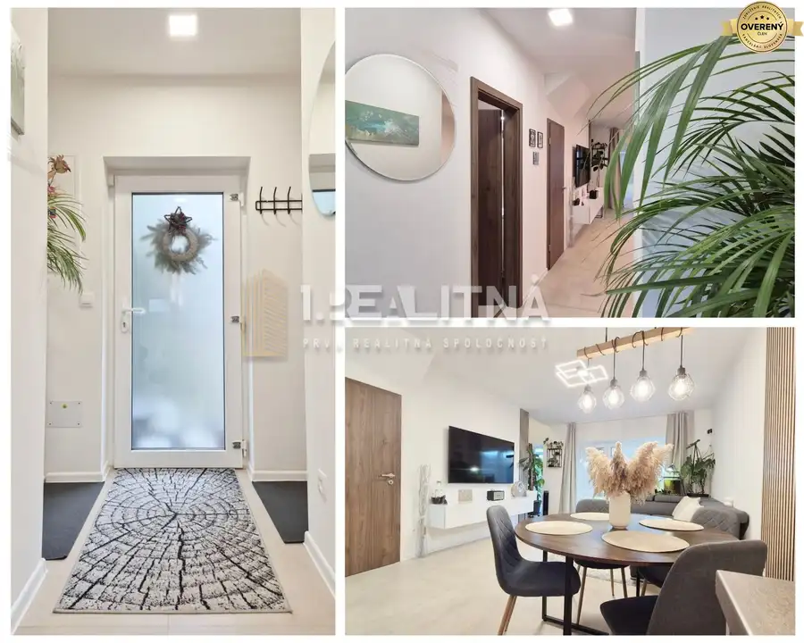
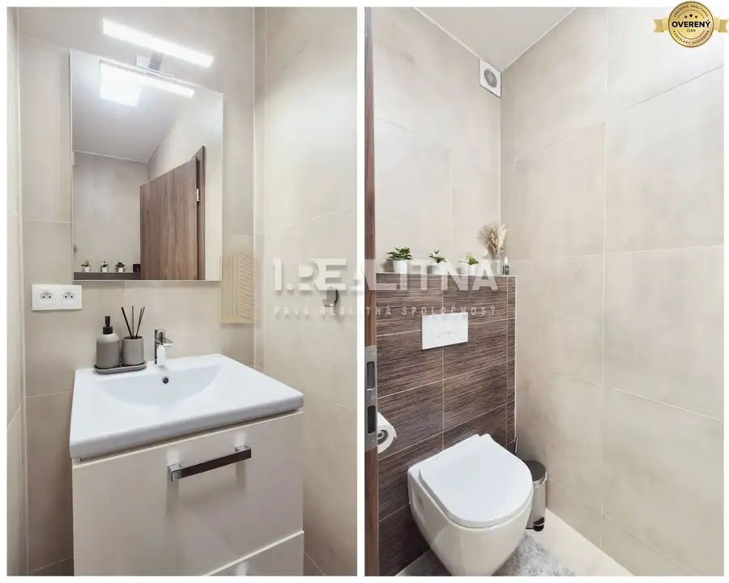
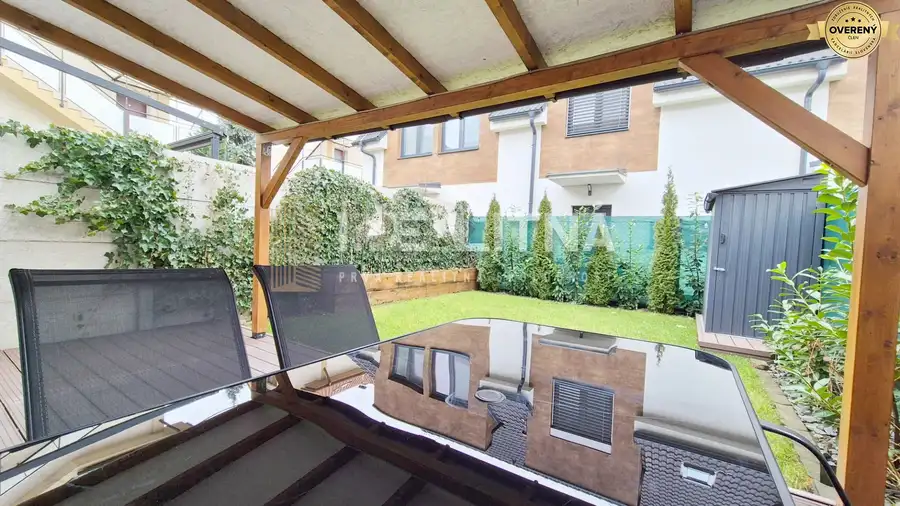
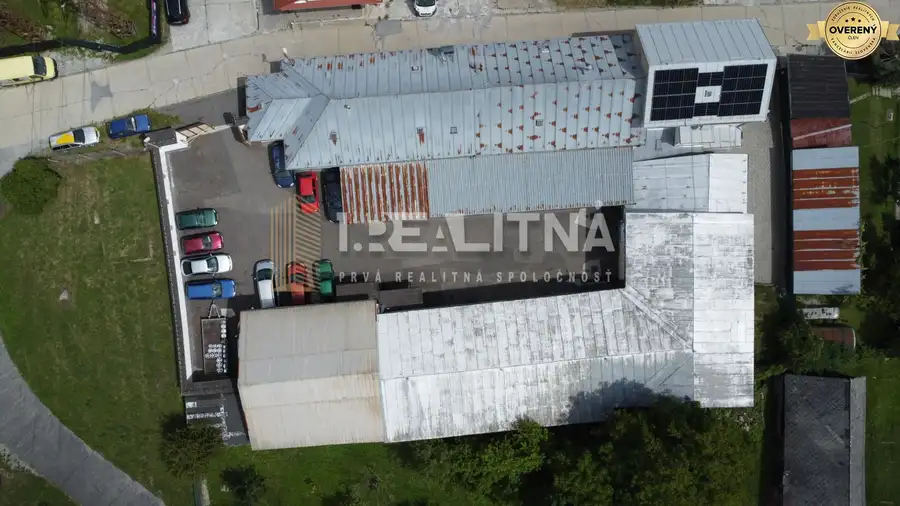
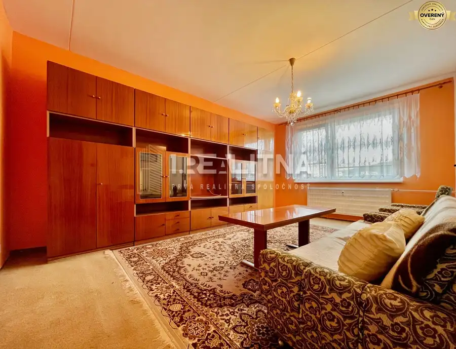
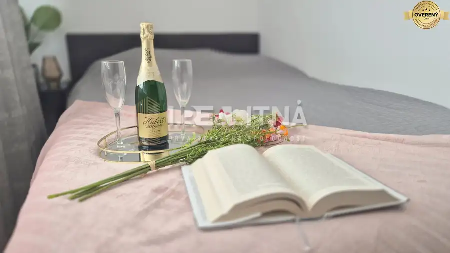

Moderný 3-izbový mezonet v novostavbe rodinného domu
Podunajské Biskupice, Bratislava






- Dispozícia3-izbový
- Plocha68 m²
- Poschodie0. z 1
- Stavúplne prerobený
- Vlastníctvoosobné
O nehnuteľnosti
Prvá realitná spoločnosť predáva časť dvojpodlažného rodinného domu v Podunajských Biskupiciach s dvoma parkovacími miestami, záhradkou a terasou. Nehnuteľnosť sa nachádza len 15 minút od centra Bratislavy v blízkosti kompletnej občianskej vybavenosti - potraviny, drogéria, škola, škôlka, LIDL, Mc Donalds - všetko len pár minút od Vášho nového bývania.
Dispozičné riešenie Vám radi predstavíme cez 3D obhliadku ⮕ https://lnk.sk/uzlv3
1. NP pozostáva zo vstupnej chodby, kuchyne spojenej s obývačkou, WC, odkladací priestor, kotolňa
2. NP - spálňa, izba (pracovňa alebo detská izba), kúpelňa, chodba, výstup na povalu
Výhody kúpy tejto nehnuteľnosti:
- osobné vlastníctvo 68,75 m2 mezonetového bytu ako časti rodinného domu s vlastným vchodom
- súkromie na plotom oddelenej vlastnej záhrade o výmere 53 m2
- podkrovie o výmere 25 m2 (slúži ako ďalší odkladací priestor)
- 2 a pol parkovacieho miesta
- napojenie na všetky inžinierske siete - voda, elektrika, verejná kanalizácia
- pozemok rovinatý
- dom skolaudovaný v roku 2021 - novostavba
- napojený na alarm
- el. podlahové kúrenie napojené na termostaty (ohrievač vody zn. Eliz)
- francúzsky balkón v spálni
- na mieru zhotovená kuchynská linka
- kompletne zariadený - práčka, umývačka riadu, sklokeramická varná doska, el. rúra, vstavané skrine, grill
- zariadenie a nábytok ostáva po dohode s majiteľom
- optický internet od Telekomu
- nízke mesačné náklady - elektrina 100Eur mesačne a voda 27,5Eur mesačne
- možnosť zobytnenia podkrovia dobudúcna
- na záhrade možnosť využitia záhonov, trávnik zavlažovaný sprinklerovým systémom
- záhrada je orientovaná južne, takže tam celé poobedie svieti slnko
Tešíme sa na spoločnú obhliadku.
Parametre
- Zastavaná plocha
- 68 m²
- Úžitková plocha
- 68 m²
- Poschodie
- prízemie
- Počet poschodí
- 1
- Počet izieb
- 3
- Vlastníctvo
- osobné
- Stav
- úplne prerobený
- Status
- aktívne
- Voda
- verejný vodovod
- El. napätie
- 230V
- Plyn
- áno
- Kanalizácia
- áno
- Postavené z
- tehla
- Energetický certifikát
- nie
- Terén
- rovina
- Novostavba
- áno
- Dátum zverejnenia
- 2026-05-26
Kde to je
Mohlo by Vás zaujímať

Nebytové priestoryNové 999 999 999 €Priemyselný areál (tri haly, recepcia, kancelária, garáže, logistika) Banská Bystrica 1260 m²1. podlažie
BytNové 139 990 €NA PREDAJ 3 IZBOVÝ BYT 75M2, ZVOLEN ZÁPAD (REZERVOVANÉ) Zvolen 3-izbový75.17 m²8. podlažie
BytNové 174 990 €MODERNÝ DVOJIZBOVÝ BYT, 37M2, DÚBRAVKA Dúbravka, Bratislava 2-izbový37 m²8. podlažie